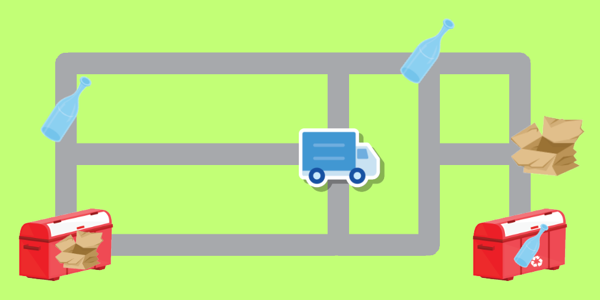

2. Skúška 23.1.2026 - Separovaný zber¶
V malom mestečku v niektorých domoch separujú odpad. Pracovník komunálnych služieb raz začas so svojim autom obchádza uličky mesta a do auta zbiera vyložené balíky plastových vriec a v príslušných zberných dvoroch ich potom opäť vykladá. Každý zberný dvor zbiera len odpad určitého typu (napríklad, len sklo, alebo len papier, alebo len plasty, …) a preto tu auto vyloží len všetky príslušné balíky. Lenže auto nemá neobmedzenú kapacitu, takže, keď už je plné, aj keď na ceste prejde okolo pripraveného balíka, nenaloží ho, ale ide ďalej. Auto budeme v štvorcovej sieti mapy mestečka riadiť šípkami ('l' pre vľavo, 'p' pre vpravo, 'h' pre hore, 'd' pre dolu), a keď sa v danom smere nebude môcť pohnúť, tak tento príkaz odignoruje.
Zadefinuj triedu SepearovanyZber:
class SeparovanyZber:
def __init__(self, meno_suboru):
...
def __repr__(self):
...
def kapacita(self, kapa):
...
@property
def baliky_na_aute(self):
...
@property
def baliky_v_ploche(self):
...
def chod(self, smer):
...
kde
metóda
__init__(meno_suboru)prečíta súbor a vytvorí z neho dvojrozmernú hraciu plochu - táto nemusí mať rovnako dlhé riadkymetóda
__repr__()vráti znakový reťazec, ktorý reprezentuje momentálny stav hracej plochy, pričom sa zobrazí aj poloha auta ako'@', medzi riadkami výpisu je znak'\n'metóda
kapacita(kapa)nastaví kapacitu auta, bez tohto nastavenia by bola kapacita auta1property
baliky_na_autevráti znakový reťazec s písmenami práve naložených balíkov na aute (nezáleží na poradí)property
baliky_v_plochevráti množinu políčok s balíkmi, ktoré sa nachádzajú v ploche a ešte sa nenakladali na auto (ako množinu trojíc(písmeno, riadok, stĺpec))metóda
chod(smer)pohne auto v jednom zo zadaných smerov ('l'pre vľavo,'p'pre vpravo,'h'pre hore,'d'pre dolu) o jedno políčkoak je na danom políčku balík (písmeno od
'a'po'z') a kapacita auta to ešte dovoľuje, tak ho naloží a z políčka ho odstráni (v hracej ploche ho nahradí znakom'.')ak je na danom políčku zberný dvor (písmeno od
'A'po'Z') a na aute má príslušné balíky, tak zo zoznamu balíkov na aute ich odstráni (písmeno zberného dvora v ploche ponechá)ak sa tento príkaz vykonať nedá (políčko je mimo plochy alebo obsahuje
'#'), metóda ho odignorujeparameter
smermôže obsahovať aj celú postupnosť šípok, vtedy auto tieto šípky postupne vykoná, pričom niektoré z nich možno odignoruje (ak sú v smere nepriechodného políčka)metóda vráti počet naozaj vykonaných krokov auta
Vstupný formát súboru:
na začiatku obsahuje popis hracej plochy ako dvojrozmernú tabuľku znakov (riadky nemusia mať rovnakú dĺžku)
znaky v tejto hracej ploche majú takýto význam:
znak
'.'priechodné políčko s cestouznak
'#'nepriechodné políčko
za popisom hracej plochy nasledujú riadky, ktoré obsahujú popis objektov v hracej ploche:
znak
'@'počiatočná poloha auta s dvojicou celých čísel pre riadok a stĺpecznak
'a'až'z'priechodné políčko s balíkom – rovnakých balíkov v ploche môže byť aj viac - za týmto znakom nasleduje aspoň jedna dvojica celých čísel pre riadok a stĺpecznak
'A'až'Z'priechodné políčko so zberným dvorom pre zodpovedajúci typ balíkov (pre príslušné malé písmeno) – zberných dvorov s rovnakým písmenom môže byť aj viac - za týmto znakom nasleduje aspoň jedna dvojica celých čísel pre riadok a stĺpec
môžeš predpokladať, že súbor je zadaný korektne.
Počítaj s tým, že v ploche sa môže nachádzať aj viac rovnakých typov balíkov a auto ich zrejme všetky bude prevážať do zberného dvora s rovnakým veľkým písmenom (hoci aj dvorov s týmto písmenom môže byť aj viac). Zrejme závisí od kapacity auta, koľko balíkov sa odvezie naraz. Ak auto vezie viac rovnakých balíkov a príde k príslušnému dvoru, naraz ich všetky vyloží.
Napríklad, takéto zadanie hracej plochy a polohy auta a ďalších objektov (súbor subor3.txt):
.........
.###.#.#.
.....#...
.###.#.#.
.......#.
a 0 6 1 0
b 2 8
A 4 8
B 4 0
@ 2 4
reprezentuje takúto plochu:
{kind=link}

Potom tento test:
if __name__ == '__main__':
sz = SeparovanyZber('subor3.txt')
#sz.kapacita(2)
print(sz)
print(f'{sz.baliky_na_aute = }')
print(f'{sz.baliky_v_ploche = }')
print(f'{sz.chod('hhppppppddd') = }')
print(sz)
print(f'{sz.baliky_na_aute = }')
print(f'{sz.baliky_v_ploche = }')
print(f'{sz.chod('dhhlllllhhlllllldddd') = }')
print(sz)
print(f'{sz.baliky_na_aute = }')
print(f'{sz.baliky_v_ploche = }')
vypíše:
......a..
a###.#.#.
....@#..b
.###.#.#.
B......#A
sz.baliky_na_aute = ''
sz.baliky_v_ploche = {('a', 1, 0), ('b', 2, 8), ('a', 0, 6)}
sz.chod('hhppppppddd') = 9
.........
a###.#.#.
.....#..b
.###.#.#@
B......#A
sz.baliky_na_aute = 'a'
sz.baliky_v_ploche = {('a', 1, 0), ('b', 2, 8)}
sz.chod('dhhlllllhhlllllldddd') = 17
.........
a###.#.#.
.....#...
.###.#.#.
@......#A
sz.baliky_na_aute = ''
sz.baliky_v_ploche = {('a', 1, 0)}
Uvedom si, že ak by bola nastavená kapacita auta na 2, tak okrem iných zmien vo výpise, dva posledné riadky by boli:
sz.baliky_na_aute = 'a'
sz.baliky_v_ploche = set()
Môžeš si stiahnuť 1sk_2.zip s testovacími súbormi 'subor1.txt', 'subor2.txt', 'subor3.txt', …, ktoré používa testovač.
Riešenie úlohy odovzdaj na testovací server https://vektor.fmph.uniba.sk/. Tvoj odovzdaný program musí začínať tromi riadkami komentárov:
# 2. skuska: separovany zber
# student: Janko Hraško
# datum: 23.1.2026